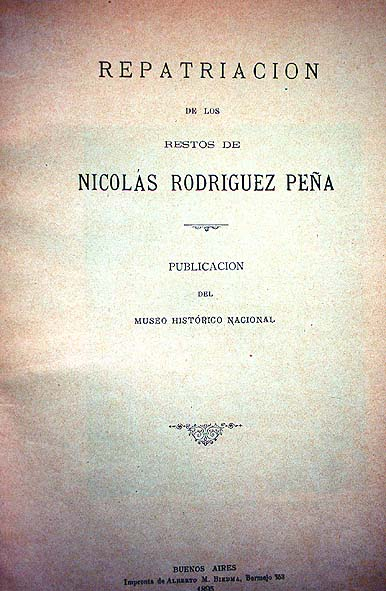

|
|  |
|
Adolfo P. Carranza, Repatriación de los restos de Nicolás Rodrguez Peña
|
But not only indigenous and colonial corpses travelled through forests and across oceans; towards the end of the century, within a larger trend of Creole memorialism, the human remains of writers, politicians, and generals of the independence period who had died in exile, were also being exhumed and repatriated in a gesture of symbolic closure of historical dissent. Institutions such as Buenos Aires's National Historical Museum would organise reception ceremonies and issue little leaflets that were circulated to schools, universities, and military institutions, whose pupils and members were invited to attend the patriotic event.
|